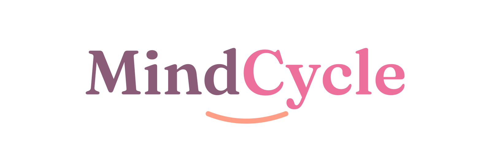

Requisitos de Software · 2026.2 · Turma 02
Produtividade no ritmo do seu ciclo.
Aplicativo de organização de tarefas que adapta o planejamento diário às variações de energia, foco e disposição ao longo do ciclo menstrual, desenvolvido na disciplina de Requisitos de Software da FCTE/UnB.
O produto endereça um problema concreto: ferramentas de produtividade tratam todos os dias como iguais e transformam oscilações fisiológicas normais em percepção de baixo desempenho. O MindCycle propõe o contrário — planejar a partir da capacidade real da usuária, tratando o descanso como parte legítima da rotina e mantendo os dados de ciclo e sintomas sob controle exclusivo de quem os registra.
Acesso rápido
Sobre o projeto
| Produto | MindCycle — organização de tarefas adaptada ao ciclo menstrual |
| Cliente | Dra. Cláudia Araújo Bottino — profissional de saúde (ginecologista) |
| Usuária representativa | Daniela Soares |
| Disciplina | Requisitos de Software — 2026.2 — Turma 02 |
| Abordagem | Híbrida · ciclo de vida iterativo e incremental · processo OpenUP · framework Kanban |
| Repositório | mdsreq-fga-unb/REQ-2026.2-T02-MindCycle |
Equipe
Ana Luisa Vieira Nunes
Gerente de Projeto · Analista de Requisitos
(Gestora do Fluxo Kanban)
Allan Kelvin Dias Gomes Monteiro
Analista de Requisitos · Analista de Dados
@ a preencherTiago Santos Bittencourt
Gerente de Projeto · Desenvolvedor Backend
(Responsável pelo Backlog)
A descrição completa das responsabilidades de cada papel está na Seção 7.1 — Composição da Equipe.
Histórico de revisão
| Data | Versão | Descrição | Autor |
|---|---|---|---|
| 07/09/2026 | 1.0 | Publicação do Documento de Visão do Produto e Projeto no GitPages, com as Seções 1 a 7, 11.1 e 12. | Equipe MindCycle |